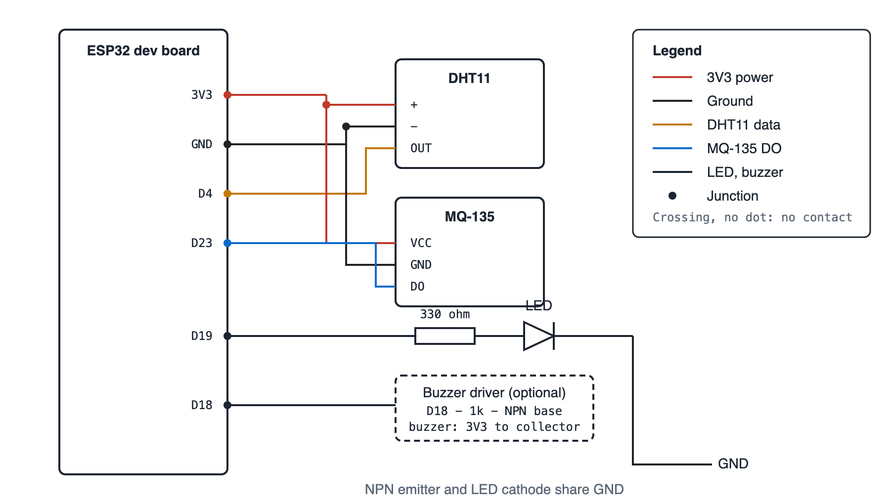

ESP32, FreeRTOS and ESP RainMaker. IoT assignment report.
1. Overview
The node measures temperature, humidity and air quality, publishes them to the ESP RainMaker cloud, and raises a
push notification when a threshold is crossed. It is monitored and controlled from the RainMaker Home app, and it can be
queried by voice through Alexa or Google Assistant after account linking. Diagnostics go to Espressif Insights, firmware
updates arrive over the air, and the node reconnects by itself after a power loss.
Item
Choice
Board
Classic ESP32 dev board, 30 pins, 4 MB flash
Framework
ESP-IDF v6.1, FreeRTOS
Cloud
ESP RainMaker (Classic), Espressif Insights
Provisioning
BLE, security 2 (username and proof of possession), assisted claiming
Sensors
DHT11 (temperature, humidity), MQ-135 digital output (air quality)
Outputs
Alarm LED, optional buzzer
2. System block diagram
Figure 1. Sensors feed the ESP32 tasks, which drive the outputs and talk to the cloud through the router.
3. Hardware
Part
ESP32 pin
Wiring
DHT11 module
GPIO4 (D4)
+ to 3V3, - to GND, OUT to D4. A bare sensor needs a 10 k pull-up on data.
MQ-135 module
GPIO23 (D23)
VCC to 3V3, GND to GND, DO to D23. The trimmer pot sets the trip level.
Alarm LED
GPIO19 (D19)
D19 to 330 ohm to LED anode, cathode to GND.
Buzzer (optional)
GPIO18 (D18)
D18 to 1 k to NPN base, buzzer between 3V3 and collector, emitter to GND.
BOOT button
GPIO0
On the board, active low.
All parts sit on the right-hand header row of the dev board. The MQ-135 digital output is used, so no ADC pin is needed
and the Wi-Fi radio cannot disturb the reading.
The MQ-135 heater draws a noticeable current. A weak USB cable or port can make the ESP32 brown out when Wi-Fi
starts. Use a short data cable in a direct port, and add the sensors one at a time.
4. Wiring schematic

Figure 2. Wiring. The buzzer path is optional and disabled in firmware by default.
Check each module's own pin labels: they are not always in the same order, and a swapped data and ground wire on the
DHT11 shows up in the log as "data line is stuck LOW".
5. Software design
Each job runs in its own FreeRTOS task and communicates through queues and an event group. Nothing polls with a
blocking delay, and no task waits for Wi-Fi, so a network outage never stops the sensors or the alarm.
Task
Trigger
Work
sensor
esp_timer, every 2 s
Reads the DHT11 (start pulse timed by a one-shot timer, then a short critical section) and the MQ-135 pin. Pushes a sample to the cloud and alert queues.
cloud
cloud queue
Updates RainMaker parameters when a value changes (0.5 C, 2 %, or air state) and at least every 30 s. Adds Insights metrics every 10 s.
alert
alert queue, 1 s housekeeping
Applies thresholds with hysteresis, debounces the air alarm, raises push notifications, repeats them every 60 s, and holds them while the cloud is down.
control
control queue
Handles the alarm switch and drives the LED and buzzer from the air alarm. Writes the Alarm status text.
connect
event group
Tracks Wi-Fi, MQTT and provisioning state. Runs the recovery watchdog and executes button actions.
button
GPIO interrupt
Measures press length: short, 3 s, 10 s.
ota
OTA event queue
Tracks update progress and alerts on failure.
Alarm rules
Source
Raises
Clears
Effects
Temperature
at or above threshold (default 35 C)
below threshold minus 2 C
App status and push notification
Humidity
at or above threshold (default 80 %)
below threshold minus 5 %
App status and push notification
Air quality
MQ-135 digital output trips (after a 30 s warm-up)
five good readings in a row
App status, push notification, alarm LED, buzzer if enabled and armed
6. Cloud and app
RainMaker device
Parameters
Temperature Sensor
Temperature (read only, time series), Threshold (slider, 20 to 60 C)
Humidity Sensor
Humidity (read only, time series), Threshold (slider, 30 to 100 %)
Air Quality
Status: GOOD or POOR
Alarm
Power (armed), Status: Normal or the active alarm list
Voice: the Temperature Sensor uses the standard device type, so a linked assistant can read it.
Insights: metrics temp, hum, air, alarm, plus heap, reboot reasons and logs.
OTA: two 1.9 MB app slots; the bootloader rolls back to the previous image if the new one never reaches the cloud.
Provisioning: BLE with sec2. The device prints a QR code at boot; the phone scans it and sends the Wi-Fi credentials.
7. Reliability
Power loss: Wi-Fi credentials and cloud credentials live in NVS. After power returns the node rejoins and reports by itself, in about 15 s in testing.
Silent cloud failure: if Wi-Fi is configured but the cloud stays unreachable for 30 s, the watchdog drops and re-establishes the Wi-Fi link.
Button: short press re-handshakes with the access point, a 3 s hold resets Wi-Fi so the device can be re-provisioned, a 10 s hold resets the node completely.
Offline alerts: notifications raised while offline stay pending and are sent as soon as the cloud returns.
Bad sensor data: a failed DHT11 read (timeout or checksum) is dropped, never reported as a value.
8. Test plan
Test
Action
Expected result
Provisioning
Scan the QR code in the app
Node joins Wi-Fi, four devices appear
Live values
Warm the DHT11 by hand
Temperature and humidity update in the app
Temperature alert
Set the threshold below the current reading
Push notification, status text changes
Air alarm
Hold an alcohol swab near the MQ-135
Status POOR, LED on, notification
Air clear
Remove the source
LED off after five good readings
Power loss
Unplug and replug USB
Node returns online without any action
Router loss
Switch the router off, then on
Node reconnects; watchdog log lines appear
Button
Hold BOOT for 3 s
Wi-Fi reset, node waits for provisioning
Insights
Open the Insights dashboard
Metrics and logs visible
Voice
Ask the linked assistant for the temperature
Current reading spoken
OTA
Upload a new image in the dashboard
Node updates, reboots, reconnects
All values come from the real sensors: the DHT11 is sampled every 2 s and the MQ-135 digital output is read at
the same rate. A failed DHT11 read is dropped, so the app keeps its last valid value instead of showing a wrong one.
9. Limitations
The DHT11 is accurate to about 2 C and 5 % RH, and updates at most once per second.
The MQ-135 digital output only says whether gas is above the trimmer setting. It gives no concentration.
Alexa and Google Assistant need the RainMaker skill linked once in the phone app.
The buzzer is disabled by default in firmware and needs its transistor wired before enabling.